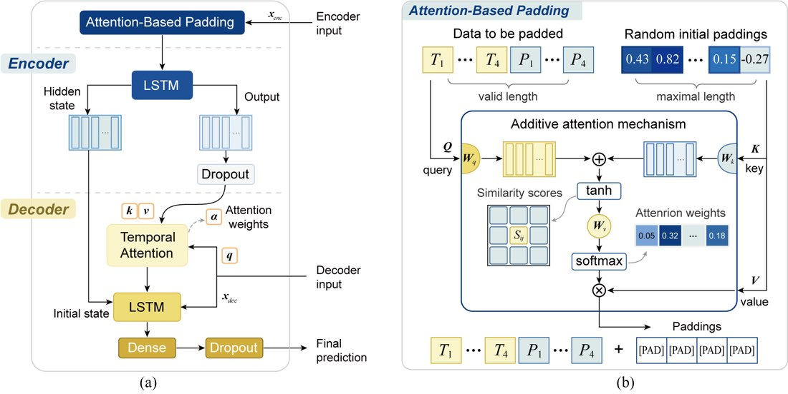
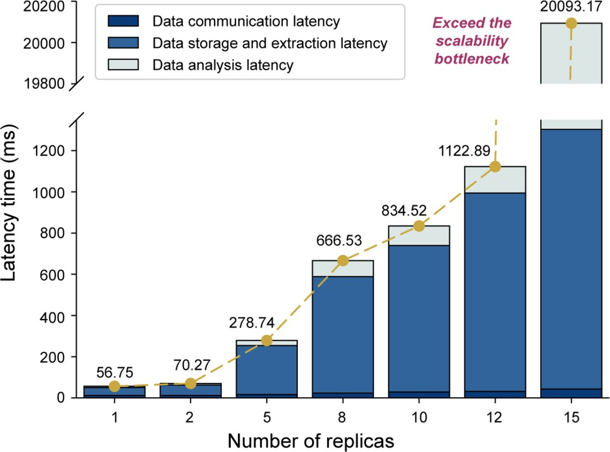

工业过程监测云原生平台（Kube-IPM）Cloud-native Industrial Process-monitoring Platform (Kube-IPM)
面向大规模工业设备的异构数据实时监测难题，提出 Kubernetes 原生平台 Kube-IPM：用注意力填充(ABP)解决异构特征维度对齐、时序注意力编解码处理时延与变量耦合，并用云-边编排实现可扩展实时监测；MAE 0.13(单步)/0.26(多步)，较最优基线提升约 38%，单机运营成本约 $65。For real-time monitoring of large fleets with heterogeneous data, Kube-IPM is a Kubernetes-native platform: attention-based padding (ABP) aligns heterogeneous feature dimensions, a temporal-attention encoder–decoder handles delay and coupling, and cloud–edge orchestration enables scalable monitoring; MAE 0.13 (1-step) / 0.26 (multi-step), ~38% better than the best baseline, ~$65 to run per machine.
背景Background
大规模 IIoT 监测面临设备特征维度不一、多变量非线性耦合、动态时延。Large-scale IIoT monitoring faces mismatched feature dimensions, nonlinear coupling and dynamic delays.
方法Method
- ABP 注意力填充：生成有意义的特征扩展而非补 0，保数据完整。Attention-based padding: generate meaningful feature expansion instead of zero-padding.
- 编码器-解码器内时序注意力层，应对时延与变量耦合。Temporal-attention layers in the encoder–decoder handle delay and coupling.
- 基于 Kubernetes 的云-边部署，实现可扩展实时监测。Kubernetes cloud–edge deployment for scalable real-time monitoring.
结果Results
- MAE 0.13(单步)/0.26(多步)，较顶级预测模型提升约 38%。MAE 0.13 (1-step) / 0.26 (multi-step), ~38% better than top models.
- 采样间隔内维持 12 个并发副本；运营成本约 $65/台。Sustains 12 concurrent replicas within the sampling interval; ~$65 to run per machine.
图片Figures


本人熟悉其方法思路（领域学习 / 技术调研）；论文一作为课题组其他成员。I am familiar with the method (domain study / technical review); first authorship belongs to other lab members.